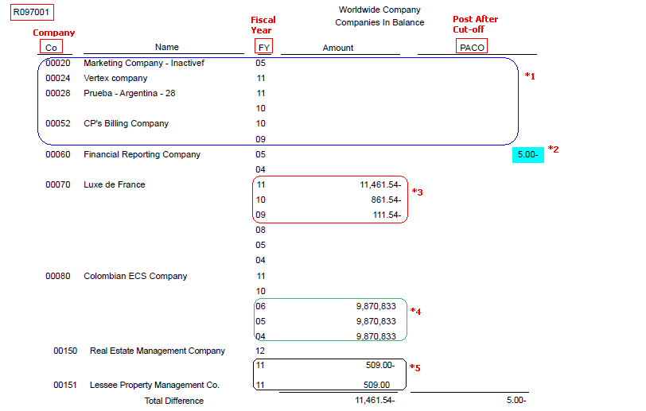

The Companies in Balance Integrity Report (R097001) prints net differences by company and fiscal year and identifies:
Adjustments posted to a prior year that are not included in the balance forward amounts for an account.
Amounts posted after the period cutoff.
Missing intercompany settlements.
Scope
This document provides an overview of the Companies in Balance Integrity Report (R097001) including the overview, program functionality, setup, information on reviewing and resolving the integrity report, reasons for integrity and frequently asked questions.
Details
Functionality
All transactions within each company balance should net to zero. The Companies in Balance report (R097001) uses information from the F0902 table to determine whether a company is in balance.
This report identifies adjustments that are posted to a prior year and are not included in the balance forward amounts for an account. This is usually caused from journal entries made to the prior year after the annual close was run. For instance, an entry was made to the revenue account but annual close was not run to refresh the balance forwards.
It prints amounts that are posted out of balance in the future period or year. For instance, if the company 00001 has current period as Dec 2011, it prints all out of balance entries from Jan 2012 under the PACO column.
It also prints missing intercompany settlements, if a company is deleted after journal entries for the company are posted.
NOTE: Its recommended that you run this report as often as possible. If you use automatic intercompany settlements, run the Companies in Balance report (R097001) and then run the Intercompany Accounts in Balance report (R097011) subsequently to make sure that intercompany accounts are in balance. For more information on the Intercompany Accounts in Balance Report (R097011) refer to Overview of Intercompany Accounts in Balance Integrity Report (R097011).
Setup
Processing Options
Print Tab
1. Suppress Zero Amounts
Enter '1' to suppress printing transactions that have zero amount balances.
Default of blank will print transactions that have zero amounts.
Data Selection
It is recommended to run the R097001 report for all companies. However, you may specify a range of companies and ledger type in data selection. This would help to improve processing time for the report.
Reviewing and Resolving the Integrity

The Companies in Balance report includes three columns. These columns appear blank if a company is in balance. If a company is out of balance, the summarized (net) amount appears in the columns as described in this table:
Column
Description
FY (Fiscal Year)
This column shows the fiscal year that is out of balance, using these guidelines:
If only one year is out of balance, this column shows all future years that are out of balance by the same amount because the out-of-balance amount carries forward to each year until it is corrected. All the years that follow will display out-of-balance amounts even if a specific year is in balance.
If more than one year is out of balance, then the amounts for the fiscal years will be different. The earliest year with an amount is the first out-of-balance condition.
Amount
This column shows the amount by which the company is out of balance. This field is cumulative. For example, if fiscal year 2006 was out of balance, that amount is added to the amount column for fiscal year 2007.
PACO (Post After Cut-off)
This column shows an amount if an entry is out of balance and was posted to a future period or to a future year.
If any companies are out of balance, the summarized amounts are shown in the columns. The system accumulates a total difference amount for all companies for each of the three columns. When companies are in balance, the columns are blank.
*1 The integrity report shows all the companies in balance with net amounts as zero. If R097001 is run with the Processing option Print Tab - Suppress Zero Amounts as '1’, it would suppress the given companies in balance and would only print the ones which are out of balance *2Amount of 5.00 in PACO (Post After Cut Off) Column for company 00060 - This error appears on the report if a journal entry has been posted to the future fiscal period or year and it does not net to zero. To correct this error:
Run the Trial Balance Report (R09410) for future fiscal periods and years to locate the entry. Select the fifth level of detail for a summarized record. Research the data on the report to determine whether you need to enter two one-sided journal entries to move the amounts to the proper periods. Post these entries out of balance.
Run the Company by Batch Out of Balance report (R09706) Overview of Company by Batch Out of Balance Integrity Report (R09706) to identify batches that posted out of balance for the company with the PACO amount. Create an out-of-balance entry to correct the original entry. Post the entry out of balance.
*3 Prior Year Total for a Company that is Out of Balance - The reasons for this error to appear on the report include:
An entry was created in the prior year to reclassify an amount between a balance sheet and an income statement account, but the year was not closed.
A batch was posted out of balance in the prior year.
The F0902 table from the prior year contains erroneous data that does not equal the transactions in the F0911 table.
To correct the error:
If the prior year entry is a reclassification between a balance sheet and an income statement account, run the Annual Close program (R098201) Overview of Annual Close Report (R098201) again to recalculate retained earnings.
Verify that the AAI item GLG4 for retained earnings is correct.
To locate and correct out-of-balance condition that exists in the prior year, run the following integrity reports and resolve any issues:
Create an out-of-balance entry (if required) in the prior year to correct the original entry, and then run the Annual Close program to recalculate retained earnings.
*4Company is Out of Balance in the Amount Column - The amount of 9,870,833.00 by which the company is out of balance is same for fiscal years 2004, 2005 and 2006. Please note that since amount field is cumulative, issue is only with fiscal year 2004 and the amount is added to the amount column for subsequent fiscal years.
The reasons for this error to appear on the report include:
The batch was posted out of balance.
The F0902 table contains erroneous data that does not equal the transactions in the F0911 table.
To correct the error:
Execute the Calculate Fiscal Year and Period program (R099103) with the processing option set to run in report mode only. If accounts appear out of balance on this report, then run it in update mode.
To locate and correct out-of-balance condition that exists in the prior year, run the following integrity reports and resolve any issues:
*5 Two Companies (00150 and 00151) are Out of Balance by the same value (509.00) in the Amount column. This error appears on the report if the intercompany settlements were not set up properly, and therefore, were not created for some batches during posting.
Run the Trial Balance by Object report (R09410) or use the Trial Balance by Object (P09214) inquiry form to determine the period in which the out-of-balance condition occurs.
Create a balancing intercompany journal entry and post with the Intercompany Settlements field set to * in the general accounting constants. If this field is not set to *, the batch creates intercompany settlements, which causes the transaction for each company to net to zero and does not eliminate the out-of-balance condition. When you are finished, you must change this field back to its original setting.
To avoid occurrence in future, ensure that you:
Research the automatic accounting instructions (AAIs) that control intercompany settlements and, if necessary, correct them.
Restrict the intercompany accounts to automatic journal entries (posting edit code M).
Verify that the Intercompany Settlements field in the general accounting constants is always set to 1 or 2.
NOTE: To prevent future out-of-balance conditions, consider:
Placing security on the Work With Batches form and in the general accounting constants to prevent improper changes.
Assigning responsibility for correcting out-of-balance conditions to one user.
Running the Integrity Reports R097001 and R097011 often.
Frequently Asked Questions
Question 1: In the EnterpriseOne General Accounting Implementation Guide, the R097001 report mentions 3 columns Prior Year, Year to Date and PACO, whereas its different and only shows Amount and PACO columns when report is run.Why?
Answer 1: The R097001 report will only show two columns i..e Amount and PACO as shown in the resulting pdf above. The Amount column may have the discrepancies from Prior Year as well as the Year to Date.
Question 2: We have tried to resolve R097001 with all the recommendations made as above but still the discrepancies exist. What could be done?
Answer 2: If problems continue to persist after trying the above, please check for damaged F0902 records. These may include:
Records without a value in fiscal year
Records without a company number
Records without a ledger type
Records without a short Account ID
Records where the short Account ID is not updated correctly with the leading zeros. The short Account ID is an alpha-numeric field which needs all 8 digits to be populated.
Records without a century
Question 3: R097001 - Company In Balance Integrity Report fails and goes to an "E" status in Work With Submitted Jobs. Review of the UBE log shows there is a problem with the processing option template and gives failure: --UBE--[0]-- Could not Retrieve Processing Option Values for POTemplate : T097001. How can this error be corrected?
Answer 3: There was a change to the R097001 ZJDE0001 processing option and in some EnterpriseOne upgrades the T097001 is disconnected from R097001 ZJDE0001 version. From Batch Versions P98305W delete the ZJDE0001 version for R097001. Add a version, enter ZJDE0001 for Version and Companies In Balance for Version Title. Click Ok.